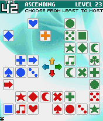
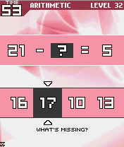
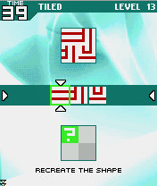

Résumé
Brain Teaser Puzzle Games
Brain Challenge is a 2D puzzle game for J2ME- and BREW-enabled cell phones consisting of twelve minigames which are designed to improve the player's intelligence in a number of categories.
Brain Challenge was initially developed strictly as a mobile phone game, but due to its success, it was later ported to a variety of platforms including Nintendo DS, PSP, Xbox Live Arcade, Playstation 3, Nintendo Wii, etc. Although not credited on the ports, I was one of two programmers responsible for writing most of the original mobile phone version, in collaboration with one part-time artist and one game designer.
Development for J2ME and BREW handsets occurred simultaneously by identifying and utilizing "least-common-denominator" functionality between the two technologies in order to minimize cross-platform difficulties. Brain Challenge was lauded internally as one of the more rapidly-developed, problem-free, and successful projects in the studio's recent history. It went on to be nominated for IGN's Wireless Game of the Month distinction, and to receive an IGN Editor's Choice Award.
What follows are screenshots and brief descriptions of the games that I developed in their entirety, as well as those to which I was a major contributor.
Ascending |
|
|  |
The goal of this challenge is to select the groups of colored tiles in order of least number of tiles to greatest number of tiles. Tiles from each group appear in one of four quadrants on the screen: upper, lower, left, and right. Groups are chosen by pressing the appropriate direction key or moving a directional stick or selector in the appropriate direction. For example, in the screenshot to the left, the correct solution would be: 1. UP (one yellow tile) 2. LEFT (eight blue tiles) 3. DOWN (eleven red tiles) 4. RIGHT (fourteen green tiles) |
Hocus Pocus |
|

|
In this minigame, an assortment of tiles drop down from the top of the screen, pass behind an obstructive "curtain," and emerge below with one tile missing from the original set. The player must correctly identify the missing tile. |
Trout Route |
|

|
The goal of this game is to determine which adjacent box to travel to by applying the displayed mathematical operation to the currently selected box. The result is a "route" traversed through the grid. In the example to the left, the green boxes represent spots that have already been visited, and hence have been eliminated as choices. The correct solution here is to move UP, leading the cursor to the box containing the value of 159 (148 + 11). |
Arithmetic |
|
|  | Arithmetic is a very straight-forward math quiz, where the goal is to fill in the missing part of the equation. The solution can be a number, as in the example to the left, or a mathematical symbol, such as plus (+), minus (-), etc. The correct answer to the problem on the left is 16 (21 - 16 = 5). |
Tick Tock |
|

|
In Tick Tock, two clock faces are displayed, and the user must simply determine how much time has elapsed between them. In the example shown, the correct solution is 0 HR, 20 MIN (3:00 to 3:20). |
Tiled |
|
|  | Tiled is a visual minigame which requires the user to recreate the composite image by correctly identifying the individual tiles of which it is comprised. In the example shown, the immediate solution is the left-most option (which is currently selected) since it matches the tile at the specified position, indicated by a green question mark. Once chosen, the question mark will move to a new location, and a new set of answers will appear until the image has been completed. |